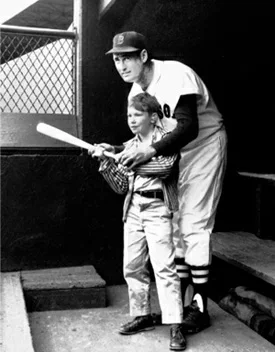

An unexpected letter arrives in 1997
The chapter opens not with a new drug, but with a letter. In the summer of 1997, Phyllis Clauson wrote to the Dana-Farber Cancer Institute on behalf of her brother. He was the boy once known to the American public as Jimmy, the young patient whose story had helped Sidney Farber raise money for children with cancer in 1948.
People at the institute assumed Jimmy must have died many decades earlier. Most children with serious cancers in his era did not survive. Jimmy had become a symbol on fundraising posters rather than a person whose later life anyone expected to find.
But Clauson reported that her brother was alive. His real name was Einar Gustafson. He lived in Maine, worked as a truck driver, and had three children. The family had protected his identity for almost fifty years. Only Farber had known, sending him Christmas cards until the doctor's death in 1973.
Why does the author begin with this surprise? Because the book has spent so many pages describing death and treatment failures. Jimmy's unexpected return forces us to remember that survival can be part of the story too.
The Jimmy Fund searches for proof
Staff members were skeptical at first. False claims about the identity of Jimmy had circulated for years. Why should this one be different?
Clauson, however, knew details that an impostor was unlikely to know: the 1948 radio broadcast, Jimmy's journeys to Boston, the baseball uniform, and the family's memories of treatment. Karen Cummings, who worked at the Jimmy Fund, realized the letter might be genuine.
In January 1998, Cummings met Einar and his wife at a truck stop on a bitterly cold morning. She brought a recording of the boy singing a baseball song during the famous fundraiser. Einar listened to his own childhood voice with tears in his eyes.
Cummings later traveled to his hometown of New Sweden, Maine. Neighbors remembered the difficult trips to Boston: Jimmy would ride in cars, trucks, and delivery vehicles whenever someone could take him. His family could not have managed the treatment without the help of the community. In his home, Einar produced the old baseball uniform he had received at the time of the broadcast.
The identity was beyond reasonable doubt. The boy called Jimmy had grown old enough to have a life beyond the illness that made him famous.
Jimmy returns to the hospital fifty years later
In May 1998, Einar returned to the institution that had treated him as a child. He was now a sixty-three-year-old man, walking through hallways that had once seemed inseparable from suffering and death.
He remembered the curtains in the children's ward. When a child was doing well, the curtains around the bed would be open. After a deterioration or death, the curtains might close; when they opened, the child was sometimes gone.
Many of Einar's former ward-mates, including children with leukemia, had not survived. Their absence made his return both joyful and painful.
The author does not claim to know precisely why Jimmy survived. Perhaps surgery helped. Perhaps chemotherapy helped. Perhaps his particular lymphoma behaved less aggressively than expected. That uncertainty matters: one survivor's story cannot establish the efficacy of a drug.
Instead, Jimmy stands for something larger. A child once known only as a cancer patient had become a father and worker with a rich, ordinary adult life.

Cancer often makes the future disappear
Mukherjee reflects on a cruel feature of serious illness: it can make patients unable to imagine a future beyond the next blood test, scan, procedure, or cycle of therapy.
A person might technically leave the hospital but continue mentally living there. Every conversation, search, memory, and decision can revolve around the illness. The body has left the ward; the mind has not.
This is the meaning of Jimmy's return. Survival is more than being alive on a particular date. It is recovering the possibility of a future.
Consider two questions: Will this treatment control the disease? and What will I do with my life next year? A seriously ill patient may be unable to think about the second question. A successful treatment can make that question possible again.
The doctor is also consumed by cancer
Mukherjee admits that the disease colonized his own thoughts. When his daughter Leela was born in 2005 at Massachusetts General Hospital, the newborn unit was located across from the cancer ward.
Even at that extraordinary personal moment, his work intruded. He helped collect blood from the baby's umbilical cord because cord blood contains valuable blood-forming stem cells that can be used in some transplants.
The scene carries several meanings at once. He is a new father watching a life begin. He is also an oncologist thinking about patients whose lives might be saved by these cells.
Mukherjee does not present this only as dedication. He recognizes how difficult it has become to separate a world of birth, hope, and family from the world of cancer.
Patients begin coming back from the 'strange country'
The clinic also offers him a different kind of story. Ben Orman, treated for Hodgkin lymphoma, has recovered after a difficult course of chemotherapy. He speaks about moving to Los Angeles for a job at a law firm.
Katherine Fitz, treated for lung cancer using surgery followed by additional therapies, has no sign of recurrence at the time described. Her personality and enthusiasm reappear after months dominated by fear.
Carla Reed, whose leukemia opened the book, returns in July 2005 with photographs of her three children. She insists that Mukherjee perform her marrow biopsy. The result shows no detectable leukemia; her remission is continuing.
Mukherjee knows that not every patient will share these outcomes. His point is that the physician must remain capable of seeing not only decline and death but also the astonishing reappearance of ordinary life.
Small annual improvements can produce a major change
By 2005, studies of American cancer mortality showed a meaningful change: death rates from many major cancers had been falling for approximately fifteen years.
The book describes an average decrease of about 1% per year, accumulating to roughly 15% from 1990 to 2005. One percent sounds unimpressive when viewed in isolation. Repeated over many years, however, it represents many lives saved.
This is a useful lesson in interpreting public-health statistics. A modest yearly reduction is not a dramatic overnight cure. Yet when it occurs across a large population, its human impact can be enormous.
Important: these are historical US figures discussed in a book published in 2010, not claims about present-day global mortality.
Different cancers improved for different reasons
There was no single 'cancer cure' behind the decline. Several approaches made different contributions.
| Cancer or group | Major source of progress described in the chapter |
|---|---|
| Lung cancer | Reduced smoking through research, campaigns, policy, and advocacy |
| Cervical and colon cancer | Detection and treatment of precancerous or early-stage disease |
| Childhood leukemia | More effective combination chemotherapy |
| Hodgkin lymphoma and some other lymphomas | Curative treatment regimens |
| Testicular cancer | Effective chemotherapy combinations |
| Breast cancer | A mixture of screening and systemic treatments |
This table illustrates a central idea: prevention, early detection, and treatment are complementary tools, not competing philosophies.
The breast-cancer debate: Prevention or chemotherapy?
One dispute was particularly persistent. Had breast-cancer mortality fallen mainly because of mammography, or because of improvements in chemotherapy and other treatments?
Statistician Donald Berry used mathematical models to estimate their contributions to the mortality decline described in the book. His analysis attributed roughly 12 percentage points to screening and 12 to systemic treatment, within an approximately 24% mortality reduction from 1990 to 2005.
These are model-based estimates, not a direct experiment that assigned exactly half the lives saved to each intervention. They nonetheless offered an important answer to rival camps: both kinds of effort had mattered.
The chapter's title, 'No one had labored in vain,' refers to this shared achievement. The scientists who studied screening and the physicians who developed treatments had not been working on unrelated sides of a battle.
A paradox: New biology, older treatments
The most unsettling observation comes next. Cancer biologists had spent decades discovering oncogenes, tumor suppressors, chromosomal rearrangements, and intracellular signaling pathways. They could describe the molecular events by which cells became malignant in unprecedented detail.
Yet much of the decline in mortality came from interventions developed using scientific ideas from earlier decades. The new knowledge of cancer genes was not yet providing a comparable wave of new therapies.
Mukherjee describes an uncomfortable gap: scientists understood cancer more clearly than they knew how to treat it.
For example, knowing that a tumor contains a mutation does not automatically tell a doctor which conventional chemotherapy drug will work. A drug may damage DNA or block cell division without specifically correcting the genetic abnormality that drives the cancer.
Finding the cause of disease and building a medicine that exploits that cause are different achievements.
Mary Lasker's disappointment
Mary Lasker, the formidable advocate who helped make cancer research a national priority, died in 1994 at age ninety-three.
Her campaigns helped create the institutional and political conditions for decades of scientific work. Yet she had hoped to witness a more decisive victory over cancer during her lifetime.
Her disappointment captures the complexity of measuring success. A public-health campaign can be transformative even if its most ambitious promise—one universal cure—is never achieved. But recognizing incremental progress should not erase how far medicine still had to go.
A patient's question exposes the missing link
The chapter ends with a telling encounter. Tom Lynch, a lung-cancer physician, carefully explains to a woman how mutations allow cancer cells to grow and spread. He then outlines treatment with chemotherapy drugs and radiation.
The patient, a history professor, notices a gap in the explanation. If cancer is caused by mutated genes, how will these particular drugs target those mutations?
The question is devastating precisely because it is reasonable. The doctor has given a modern genetic explanation, but the proposed drugs are not necessarily designed to target that genetic mechanism.
Mukherjee concludes that a vast accumulation of basic scientific knowledge is pressing toward a new kind of medicine. The next chapters will show how researchers begin crossing that gap—from cancer gene → molecular target → specific drug.
Important terms to remember
| Term | Easy meaning |
|---|---|
| Survivorship | Living with and beyond a cancer diagnosis, including recovery of everyday life |
| Mortality rate | How often people die from a disease in a defined population and period |
| Screening | Testing people without symptoms to find disease earlier |
| Adjuvant treatment | Treatment added after primary treatment to reduce recurrence risk |
| Molecular target | A specific molecule or pathway that a medicine is intended to affect |
What this chapter really means
The victories against cancer were cumulative and collaborative. No single discovery saved everyone. Better prevention protected some people from developing cancer, screening found other cancers earlier, and treatment made many previously lethal diseases curable or controllable.
But understanding how cancer develops at the molecular level had outpaced the development of medicines designed from that knowledge. The chapter ends by asking whether the molecular revolution can finally become a therapeutic revolution.
Final takeaway: Jimmy's return proves that life after cancer is possible. The mortality data show that thousands of such futures have become possible through many kinds of effort. The next challenge is to turn the new biology of cancer into more selective and effective drugs.